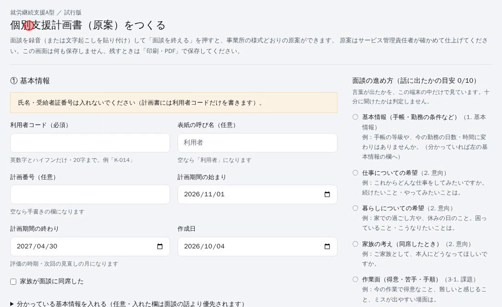
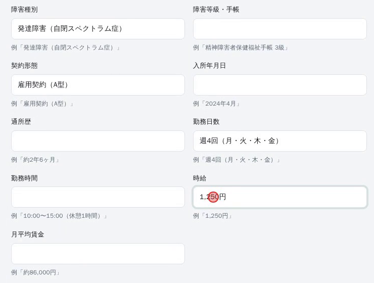
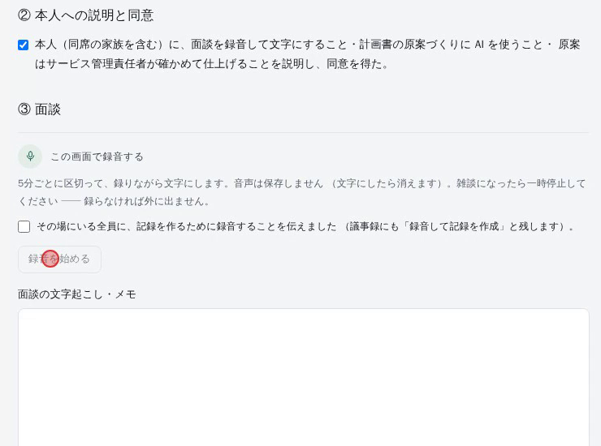
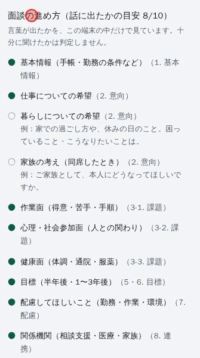
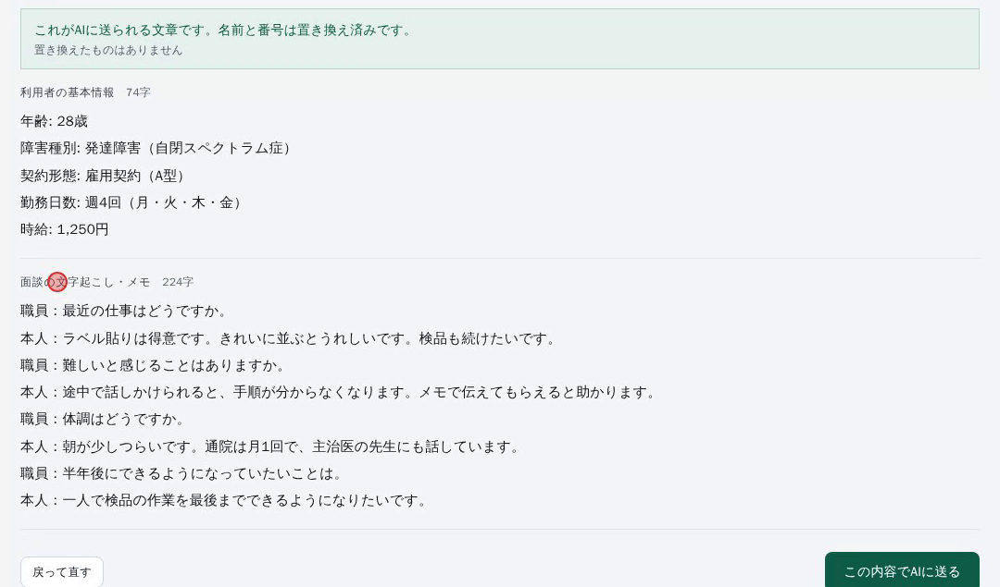
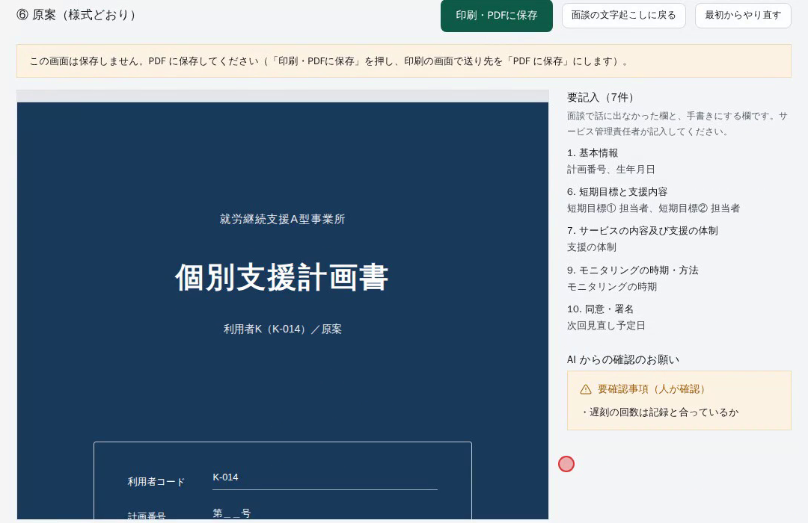
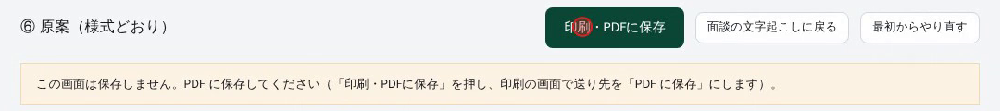

面談の録音（または文字起こし）から、事業所の様式（1〜10章）どおりの個別支援計画書の原案を15〜30秒ほどで作る画面です。原案は、サービス管理責任者が確かめて、足りない所を書き足して仕上げます。
AI に文章を送るのは、5 の1回だけです。面談の途中で送ることはありません。
試行版は、みんなで同じ画面を使います。この画面は何も保存しないので、同時に使っても、ほかの人の入力は見えません。AI が原案を作れるのは、全員で1日30回までです（日本時間の0時で数え直します）。
操作の流れは、操作動画（約3分・声と字幕つき）でも見られます。動画は管理者が配ります。

| 利用者コード（必須） | 英数字とハイフン（-）だけ、20字まで。例「K-014」。氏名は入れません。 |
|---|---|
| 表紙の呼び名（任意） | 計画書の表紙に出る呼び名です。空なら「利用者」＋コードの英字になります（K-014 なら「利用者K」）。 |
| 計画番号（任意） | 空なら、計画書では手書きの欄になります。 |
| 計画期間 | はじめから「来月1日〜6か月後」が入っています。必要なときだけ直します。終わりの月が、評価と次の見直しの月になります。 |
| 作成日 | はじめから今日の日付が入っています。 |
| 家族が面談に同席した | 同席したときだけチェックします。チェックが無いと、家族の意向は「要確認」になります。 |
「分かっている基本情報を入れる」を押すと、欄が開きます。
年齢・性別・障害種別・障害等級・手帳・契約形態・入所年月日・通所歴・勤務日数・勤務時間・時給・月平均賃金を入れられます。
入れた欄は、面談の話より優先して計画書に載ります。分からない欄は空のままで構いません（計画書では「要記入」になります）。

面談の前に、本人（同席の家族も）に次の3つを説明し、同意を得てから「② 本人への説明と同意」にチェックを入れます。
チェックを入れるまで、録音も「面談を終える」もできません。

ほかで起こした文字起こしや、メモを打ち直したものを、欄に貼り付けても使えます。欄の文字は手で直せます。
計画書に要る10の話題が、様式の順に並んでいます。話に出ると●になり、まだの話題には聞き方の例が出ます。
これは目安です。言葉が出たかどうかだけを、パソコンの中で見ています。十分に聞けたかまでは判定しません。


確かめたら この内容でAIに送る を押します。15〜30秒ほどで原案ができます（面談が長いと少し延びます）。その間、画面を閉じないでください。

| 左の原案 | 事業所の様式どおりの原案です。枠の中をスクロールして読みます。 |
|---|---|
| 要記入（○件） | 面談で話に出なかった欄と、手書きにする欄（計画番号・生年月日・担当者など）です。サービス管理責任者が記入します。 |
| AI からの確認のお願い | 黄色の帯です。記録と照らして確かめてほしい点が出ます（例：遅刻の回数は記録と合っているか）。 |

| こんなとき | どうする |
|---|---|
| 赤い帯「利用者コードを入れてください」「利用者コードは英数字とハイフン（-）だけ…」 | コードを「K-014」のような形にします。氏名は入れません。 |
| 「本人への説明と同意のチェックを入れてください。」 | 手順2のチェックを入れます。 |
| 「面談の文字起こし・メモがありません。」 | 録音するか、文字起こしを貼り付けます。 |
| 「計画期間の終わりが始まりより前になっています。」 | 計画期間の日付を直します。 |
| 「個人情報の置換に失敗したため送信を中止しました」 | 名前や番号が残っています。「戻って直す」で記号に書き換えます。 |
| 「入力が大きすぎます」「入力全体が大きすぎます」 | 文字起こしの要らない所（雑談など）を消して、もう一度押します。 |
| 「通信に失敗しました」 | インターネットにつながっているか確かめて、もう一度押します。 |
| 「時間内に終わりませんでした（504）」 | 少し待って、もう一度押します。 |
| 「今日の試行で使える原案づくりの上限（30回）に達しました」 （録音では「文字起こしの上限（約20時間分）」） | その日はもう使えません。翌日（日本時間の0時より後）にもう一度試します。 |
| 「短い時間に続けて…使われたため、少し止めています」 | 同じ場所から続けて使いすぎました。1時間ほど空けてから押します。 |
| 「いま試行版が混み合っています」 | 1分ほど待ってから、もう一度押します。 |
| 「AI会社（Anthropic）の利用枠が不足しています」 | 管理者に連絡します。 |
| 「録音を始める」が押せない | 手順2の同意と、録音の前のチェックを入れます。マイクを「許可」したかも確かめます。 |
| 原案の枠が真っ白のまま／「印刷・PDFに保存」で印刷の画面が出ない | 1分ほど待ってから押します。それでも出ないときは、職場のネットワークが外部の部品の読み込みを止めている可能性があります。別のネットワークで試すか、管理者に連絡します。 |
| 画面を閉じた・再読み込みした | 入力と原案は消えます（保存しないため）。閉じる前に、ブラウザが確かめる画面を出します。 |
次の点の感想を、管理者に伝えてください。今後の直しに使います。